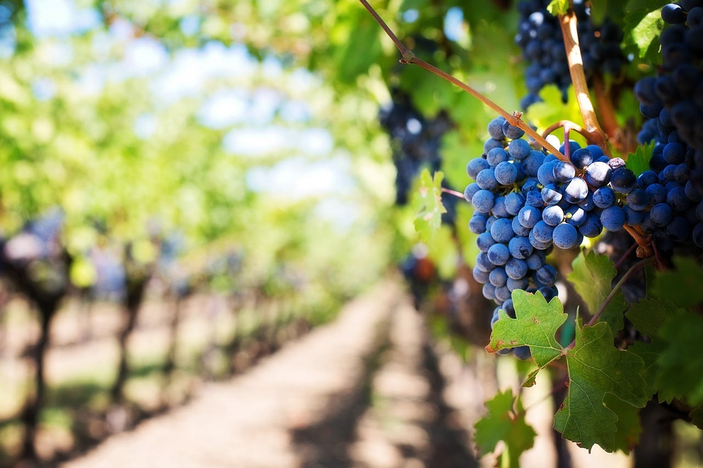
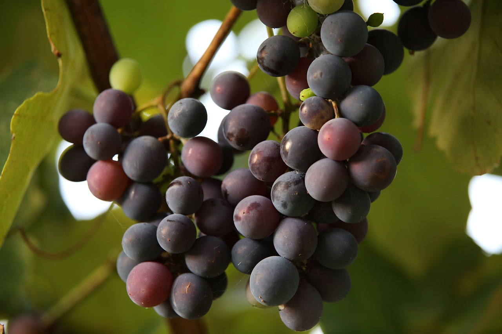

ვაზი:ვაზი (ლათ. Vitis) — მცენარის გვარი ვაზისებრთა ოჯახისა.
აერთიანებს 70-მდე სახეობას, რომლებიც უმთავრესად დედამიწის თბილი და ზომიერი ჰავის ქვეყნებშია გავრცელებული.
ბუნებრივად მოზარდი ვაზი მხვიარაა, საყრდენს ულვაშებით ანუ პწკლით ემაგრება, აქვს ყავისფერი ქერქი, რომელიც
ზოლ-ზოლად სცილდება.
გამრავლება:ვვაზის ფესვი წიპწით (თესლით) გამრავლებისას მთავარღერძიანია, მთავარი ფესვი შემდეგ ივითარებს დამატებით
ფესვებს. რქით გამრავლებისას მუხლის არეში მრავალი ფესვი წარმოიქმნება. ვაზი შეიძლება იყოს ბუჩქისებრი ანუ უშტამბო
და შტამბიანი. შტამზე განლაგებულია მრავალწლიანი ტოტები ანუ მხრები და ერთწლიანი რქები და ყლორტები. ვაზის რქაზე,
ფოთლის ყუნწის იღლიაში, მოთავსებულია რთული აგებულების კვირტი, რომელიც ძირითადი და შემცვლელი კვირტებისაგან
შედგება. მრავალწლიან ღეროზე ვითარდება მძინარე კვირტი.
ვეგეტაცია:ვეგეტაციის პერიოდში ვაზის ყლორტზე
წარმოიქმნება დამატებითი ყლორტი ანუ ნამხარი, რომელიც შედარებით სუსტად იზრდება. პწკალი ვაზის დასამაგრებელი
საშუალებაა. იგი ყლორტზე, ფოთლის მოპირდაპირე მხარეს მე-3–მე-5 მუხლიდან ვითარდება. ვაზის ფოთოლი მომრგვალო,
ოვალური, გულისმაგვარი ან კვერცხისებრია; დაუნაკვთავია ან 3–5-ნაკვთიანი, იშვიათად მრავალნაკვთიანია (შასლა
ოხრახუშისებრი), ფოთლის ფირფიტისა და ყუნწის ამონაკვთები ღია ან დახურულია და მრავალი გარდამავალი ფორმა აქვს.
ფირფიტის ნაპირებზე სხვადასხვა ზომისა და მოყვანილობის კბილებია. ჯიშის მიხედვით შეიძლება ფოთოლი იყოს ბრტყელი,
ღარისებრი, ძაბრისებრი, ქვემოთ ან ზემოთ ნაპირებშეკეცილი და სხვა. ფირფიტა შეუბუსავი ან შებუსულია, ხშირად სქელი,
ქეჩისებრი ბუსუსით, ფერად ღია ან მუქი მწვანეა, მოწითალო ან მოყვითალო ელფერი და ლაქები აქვს. ყვავილი წვრილია
შეკრებილი საგველა ყვავილედად, ორსქესიანი ან ფუნქციურად ცალსქესიანი (ქვევით დახრილი უნაყოფო მტვრიანებით ან
განუვითარებელი ბუტკოთი).
ყვავილის ნაწილებია: ჯამი, გვირგვინის ფურცლების, მტვრიანები და ბუტკო. ჯამი განუვითარებელია, გვირგვინი —
ხუთფურცლიანი. მტვრიანები ძირითადად ხუთია. ვაზის ნაყოფი ორბუდიანი, წვნიანი, სხვადასხვა ფერის მარცვალია. მტევანი
შეიძლება იყოს პატარა, საშუალო ან დიდი; ცილინდრული, ცილინდრულ-კონუსური, კონუსური, ფრთიანი, უფორმო ან
განტოტვილი; ძალიან თხელი, საშუალო სიკუმსის, კუმსი და ძლიერ კუმსი; მარცვალი მრგვალი, მომრგვალო, ოვალური,
კვერცხისებრი, მოგრძო ან გრძელია, ფერად ღია მწვანე, მწვანე, ღია ვარდისფერი, მუქი ვარდისფერი,
მოყვითალო-ქარვისფერი, მოწითალო-ქარვისფერი, მოწითალო-ღვინისფერი, მონაცრისფრო ან შავ ფერში გარდამავალი მუქი
ლურჯი. წიპწა მარცვლის შუაშია (1-4 ცალი). წიპწის ნაწილებია: ნისკარტი, ქალაძა და მუცლის ღარები. წიპწა შეიცავს
ცილოვან ნივთიერებებს, რომლებიც საჭიროა მცენარის ჩანასახის განვითარებისათვის.

საქართველოში:
საქართველოში ვაზის კვირტის გაშლა მარტის ბოლოს იწყება და 45-55 დღე გრძელდება. ვაზის ყვავილობა 15°C-ზე იწყება
(მაისის ბოლოს ან ივნისის პირველ დეკადაში) და 25-30°C-ის დროს ინტესიურად მიმდინარეობს. მისი ხანგრძლივობა 10-12
დღეა. ვაზის სავეგეტაციო პერიოდის ხანგრძლივობა საქართველოში 225-260 დღემდე აღწევს. ვაზზე მოქმედი ბუნებრივი
ფაქტორებიდან აღსანიშნავია: ტემპერატურა, ნიადაგის ფიზიკურ-ქიმიური შედგენილობა, სიმაღლე ზღვის დონიდან, ნაკვეთის
ექსპოზიცია და სხვა. ვაზის ზრდა-განვითარება 8°C-ის ქვევით ჩერდება, 25-30°C-ზე ნორმალურად მიმდინარეობს, ხოლო
40°C-ის ზევით კვლავ წყდება. ვაზის ჯიშების უმრავლესობა - 14-15°C ყინვას იტანს, ზოგი - 40°C-ის პირობებშიც კარგად
ვითარდება (ამურის ვაზი).
საქართველოში:
საქართველოში ვაზის სამრეწველო ნარგავები ზღვის დონიდან 600-700 მ-მდეა გავრცელებული. მაღლობ ადგილებში ვაზის
საადრეო ჯიშებს აშენებენ (ქართული საადრეო, ხალილი, პინო), დაბალ ზონაში - სიმწიფის საშუალო პერიოდის ან საგვიანო
ჯიშებს (რქაწითელი, საფერავი, ცოლიკოური). ვაზის საერთო განვითარება, მოსავლის რაოდენობა და ხარისხი დიდად არის
დამოკიდებული ნიადაგის ფიზიკურ-ქიმიურ შედგენილობაზე.
ჯიშები
ცნობილია ვაზის 4000-მდე ჯიში, რომლებიც ერთმანეთისაგან განსხვავდებიან ბოტანიკური, აგრონომიული და სამეურნეო
ნიშან-თვისებებით. მათი კლასიფიკაციის დროს ითვალისწინებენ ზრდის სიძლიერეს (სუსტი, საშუალო, ძლიერი და მეტად
ძლიერი), ყურძნის შეფერილობას (თეთრი, ვარდისფერი, წითელი და სხვა), სიმწიფის პერიოდს (საადრეო, საშუალო, საგვიანო
და ძლიერ საგვიანო), მოსავლიანობის (მცირე-, საშუალო-, უხვმოსავლიანი) და სამეურნეო მიმართულებას (სასუფრე,
საღვინე, საკონიაკე, საშამპანო, ყურძნის წვენის, კონცენტრატების, საქიშმიჭე, ფილოქსერაგამძლე საძირე,
დეკორატიული).

ამიტომ ნიადაგისა და ჯიშების შერჩევა-გაშენება პროდუქციის სპეციფიკის მიხედვით ხდება. ვაზისთვის კარგია
კორდიან-კარბონატული, ალუვიური, ქვაღორღიანი და ქვიშნარი ნიადაგები. ვაზი მაღალხარისხოვან ყურძენს სამხრეთ ან
სამხრეთ-აღმოსავლეთის ექსპოზიციის ფერდობზე იძლევა. ვაზს ამრავლებენ თესლით (ახალი სელექციური ჯიშების მისაღებად)
და ვეგეტატიურად - კვირტით, რქით, გადაწიდვნით, მყნობით. ფილოქსერისაგან დასაცავად ვაზს ამყნობენ ფილოქსერაგამძლე
ვაზის საძირეზე. ნამყენი სპეციალურ სანერგეში გამოჰყავთ, სამუშაო პროცესების რაციონალურად ჩასატარებლად და
ხარისხიანი პროდუქციის მისაღებად ვაზს შპალერული წესით აფორმებენ. ამასთან, დიდი მნიშვნელობა აქვს აგროტექნიკურ
ღონისძიებების დროულ ჩატარებას, კერძოდ, ინტენსიური ზრდის შესაჩერებლად ვაზს სისტემატურად უნდა აცლიდნენ ნამხარს,
თავს და სხვა; ნიადაგის მოვლის ღონისძიებებიდან აღსანიშნავია სარეველეების მოსპობა, გაფხვიერება, რწყვა და სხვა.